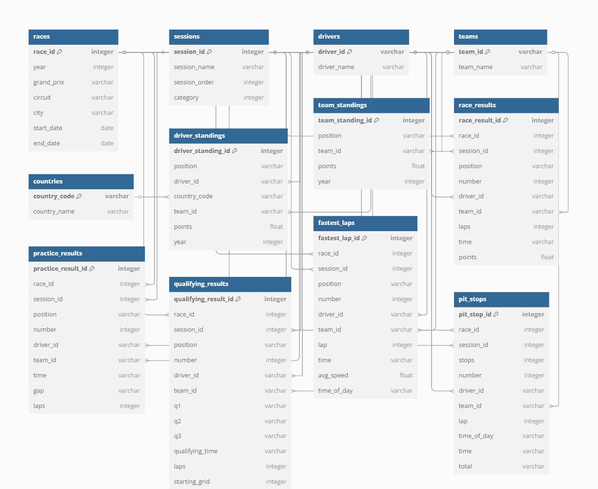

🏎️ F1 Data Pipeline
This project implements a robust, automated ETL (Extract, Transform, Load) pipeline for Formula 1 data, designed for reliability, scalability, and cloud integration. The pipeline is orchestrated via GitHub Actions and leverages modern Python data engineering practices.
🔍 Extract
Web Crawling: Custom Python crawlers use aiohttp, BeautifulSoup, and Playwright to asynchronously and interactively scrape F1 data from the official Formula 1 website, including:
- Driver standings and profiles
- Team standings and profiles
- Race results, sessions, and fastest laps
Asynchronous requests enable the pipeline to fetch multiple web pages in parallel, significantly reducing the total extraction time compared to traditional sequential scraping. This is especially valuable for large, multi-year datasets and frequent updates.
Checkpointing: Intermediate results and checkpoints are saved in f1_checkpoints folder to support incremental extraction and recovery from failures.
Data Storage: Raw and processed data are stored in structured JSON files under data, organized by entity and year.
🔄 Transform
Automatic schema detection: Identifies and adapts to changes in data structure across years and session types (Practice, Qualifying, Race, etc.).
Dynamic column mapping: Handles different or missing columns for each session.
Session-specific parsing: Applies custom logic for each session type to extract and normalize relevant data.
Consistent output schema: Normalizes all records to a unified structure for reliable downstream analytics.
Fact and Dimension Modeling: The pipeline builds star-schema-style tables:
- Dimensions: drivers, teams, races, sessions, countries.
- Facts: race_results, qualifying_results, practice_results, fastest_laps, pit_stops, team_standings, driver_standings.

📥 Load
Cloud Data Warehouse Integration: Transformed data is loaded into Google BigQuery using the google-cloud-bigquery library.
- Automated table creation and schema inference.
- Bulk loading of both dimension and fact tables.
Automation: The entire ETL process is orchestrated by f1_scheduler.py and scheduled via a GitHub Actions workflow for weekly execution on Monday at 00:00 UTC.
🚧 Future Work
Planned enhancements include developing more advanced analytical queries and machine learning models for deeper F1 data analysis.
⚠️ Disclaimer
Due to Formula 1’s Terms & Conditions, this repository contains code only—no scraped data is included.